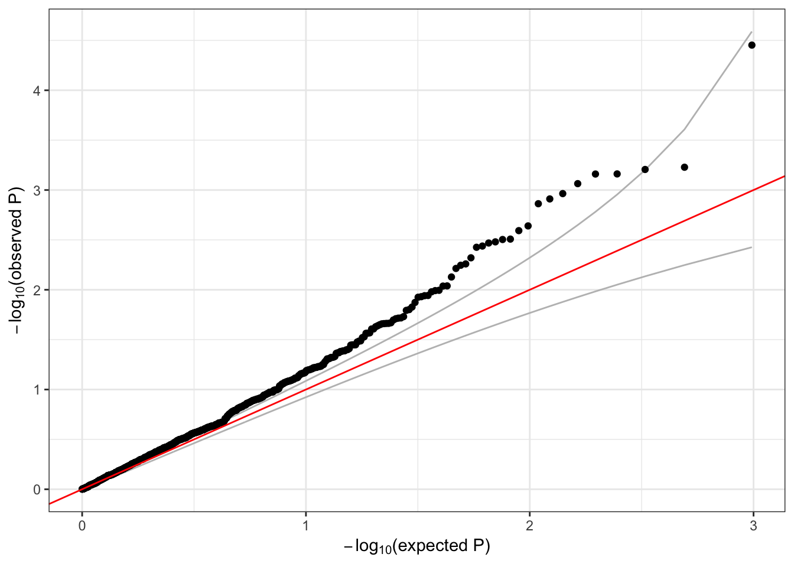

4 Association tests
These exercises introduce association testing: how to find which genetic variants are associated with a phenotype.
4.1 Null model
The first step in an association test is to fit the null model. We will need an AnnotatedDataFrame with phenotypes. This data structure is provided by the Bioconductor Biobase package, and it contains both the data and metadata (descriptions of each column in the data).
# sample annotation
sampfile <- "data/sample_phenotype_annotation.RData"
annot <- TopmedPipeline::getobj(sampfile)
library(Biobase)
# access the data with the pData() function
head(pData(annot))## sample.id subject.id Population Population.Description sex
## 1 HG00096 HG00096 GBR British in England and Scotland M
## 2 HG00097 HG00097 GBR British in England and Scotland F
## 3 HG00099 HG00099 GBR British in England and Scotland F
## 4 HG00100 HG00100 GBR British in England and Scotland F
## 5 HG00101 HG00101 GBR British in England and Scotland M
## 6 HG00102 HG00102 GBR British in England and Scotland F
## status age height study
## 1 0 47 165.300 study_1
## 2 1 47 144.780 study_3
## 3 0 40 185.500 study_2
## 4 1 45 150.622 study_3
## 5 0 40 177.800 study_3
## 6 0 49 169.100 study_1# access the metadata with the varMetadata() function
varMetadata(annot)## labelDescription
## sample.id sample identifier
## subject.id subject identifier
## Population population abbreviation
## Population.Description population description
## sex sex
## status simulated case/control status
## age age at measurement of height
## height subject's height in cm
## study study identifierWe will test for an association between genotype and height, adjusting for sex, age, and study as covariates. First, examine the data to see if the height distribution varies by study.
library(ggplot2)
ggplot(pData(annot), aes(study, height)) + geom_boxplot()
From the boxplot, it is clear that the different studies have different mean and variance for height. However, it is possible that this could be the result of different sex and age distributions in each study. To check this, we run a model that adjusts height for age and sex.
library(GENESIS)
mod_1 <- fitNullModel(annot, outcome="height", covars=c("sex", "age"),
verbose=FALSE)The output of fitNullModel is a list with a number of named elements
names(mod_1)## [1] "family" "hetResid" "varComp" "varCompCov"
## [5] "fixef" "betaCov" "fitted.values" "resid.marginal"
## [9] "logLik" "AIC" "workingY" "outcome"
## [13] "model.matrix" "group.idx" "cholSigmaInv" "converged"
## [17] "zeroFLAG" "RSS" "Ytilde" "resid"
## [21] "CX" "CXCXI" "sample.id"The elements that we will work with in this exercise are:
converged: an indicator of whether the model successfully convergedmodel.matrix: The matrix of subject-covariate values used to fit the modelfixef: The fitted fixed effectsbetaCov: The covariance of the fitted fixed effectsresid.marginal: The (marginal) residuals from the model, which have been adjusted for the fixed effects but not for the covariance structurevarComp: The fitted variance component for each input covariance matrix
Make sure the model converged.
mod_1$converged## [1] TRUENow, add the residuals to the phenotype data frame for plotting.
annot$residuals <- mod_1$resid.marginalWe want to check if the different studies have the same mean height after adjustment for other covariates (here, age and sex). We will first do this qualitatively by making a boxplot of the residuals by study.
ggplot(pData(annot), aes(study, residuals)) + geom_boxplot()Height still has different variances in each study, even after adjusting for age and sex Therefore, we allow the model to use heterogeneous variance among studies with the parameter group.var.
nullmod <- fitNullModel(annot, outcome="height", covars=c("sex", "age", "study"),
group.var="study", verbose=FALSE)
save(nullmod, file="null_model.RData")The fixef element now includes effects for study:
nullmod$fixef## Est SE Stat pval
## (Intercept) 163.67175933 3.18936046 2633.542254 0.000000e+00
## sexM 6.28764510 0.68812251 83.491933 6.397652e-20
## age 0.07519782 0.06921691 1.180283 2.772984e-01
## studystudy_2 10.63152325 0.82176939 167.375183 2.769991e-38
## studystudy_3 -8.96183691 0.84479021 112.537257 2.724960e-26We can also check the variance components (varComp) in the model, which are different for each study:
nullmod$varComp## study_1 study_3 study_2
## 98.20192 168.82045 155.70722The fitted values of the variance components are different for the different studies, indicating that the distributions of height in the three studies have different variance even after accounting for the other covariates.
We also recommend taking an inverse normal transform of the residuals and refitting the model. This is done separately for each group, and the transformed residuals are rescaled. See the full procedure in the
pipeline documenation.
4.2 Single-variant tests
Now that we have a null model adjusting height for covariates, we can run an association test to look for genetic effects on height.
Single-variant tests are the same as in GWAS. We use the assocTestSingle function in GENESIS. First, we have to create a SeqVarData object including both the GDS file and the sample annotation containing phenotypes. We then create a SeqVarBlockIterator object to iterate over blocks of variants.
library(SeqVarTools)
gdsfile <- "data/1KG_phase3_subset_chr1.gds"
gds <- seqOpen(gdsfile)
seqData <- SeqVarData(gds, sampleData=annot)
iterator <- SeqVarBlockIterator(seqData, verbose=FALSE)
assoc <- assocTestSingle(iterator, nullmod)## # of selected samples: 1,126head(assoc)## variant.id chr pos allele.index n.obs freq Score
## 1 1 1 970546 1 1126 0.0039964476 -0.1191236
## 2 2 1 985900 1 1126 0.0492895204 -1.6707553
## 3 3 1 1025045 1 1126 0.0004440497 -0.2795838
## 4 4 1 1265550 1 1126 0.0008880995 -0.1105487
## 5 5 1 1472676 1 1126 0.0071047957 0.3630992
## 6 6 1 1735725 1 1126 0.0022202487 -0.1300405
## Score.SE Score.Stat Score.pval
## 1 0.2577712 -0.4621292 0.643988703
## 2 0.8841849 -1.8895995 0.058811539
## 3 0.1007173 -2.7759261 0.005504472
## 4 0.1085480 -1.0184319 0.308472754
## 5 0.3456555 1.0504657 0.293504072
## 6 0.1973175 -0.6590420 0.509868791We make a QQ plot to examine the results.
library(ggplot2)
qqPlot <- function(pval) {
pval <- pval[!is.na(pval)]
n <- length(pval)
x <- 1:n
dat <- data.frame(obs=sort(pval),
exp=x/n,
upper=qbeta(0.025, x, rev(x)),
lower=qbeta(0.975, x, rev(x)))
ggplot(dat, aes(-log10(exp), -log10(obs))) +
geom_line(aes(-log10(exp), -log10(upper)), color="gray") +
geom_line(aes(-log10(exp), -log10(lower)), color="gray") +
geom_point() +
geom_abline(intercept=0, slope=1, color="red") +
xlab(expression(paste(-log[10], "(expected P)"))) +
ylab(expression(paste(-log[10], "(observed P)"))) +
theme_bw()
}
qqPlot(assoc$Score.pval)4.3 Exercises
Logistic regression:
fitNullModelcan use a binary phenotype as the outcome variable by specifying the argumentfamily=binomial. Use thestatuscolumn in the sample annotation to fit a null model for simulated case/control status, withsexandPopulationas covariates. Then run a single-variant test using this model.Inverse normal transform: use the function
nullModelInvNormto perform an inverse normal transform on theheightvariable. For each study separately, compute a null model and do the inverse normal transform using just the values for that study. Compare these residuals with the initial residuals you obtained for that study by transforming all studies together.
4.4 Sliding window tests
For rare variants, we can do burden tests or SKAT using the GENESIS function assocTestAggregate. We restrict the test to variants with alternate allele frequency < 0.1. (For real data, this threshold would be lower.) We use a flat weighting scheme. We define a sliding window across the genome using a SeqVarWindowIterator.
seqResetFilter(seqData, verbose=FALSE)
iterator <- SeqVarWindowIterator(seqData, windowSize=5000, windowShift=2000, verbose=FALSE)
assoc <- assocTestAggregate(iterator, nullmod, test="Burden", AF.max=0.1, weight.beta=c(1,1))## # of selected samples: 1,126names(assoc)## [1] "results" "variantInfo"head(assoc$results)## chr start end n.site n.alt n.sample.alt Score Score.SE
## 1 1 966001 971000 1 9 9 -0.1191236 0.2577712
## 2 1 982001 987000 1 111 107 -1.6707553 0.8841849
## 3 1 1022001 1027000 1 1 1 -0.2795838 0.1007173
## 4 1 1262001 1267000 1 2 2 -0.1105487 0.1085480
## 5 1 1468001 1473000 1 16 16 0.3630992 0.3456555
## 6 1 1732001 1737000 1 5 5 -0.1300405 0.1973175
## Score.Stat Score.pval
## 1 -0.4621292 0.643988703
## 2 -1.8895995 0.058811539
## 3 -2.7759261 0.005504472
## 4 -1.0184319 0.308472754
## 5 1.0504657 0.293504072
## 6 -0.6590420 0.509868791head(assoc$variantInfo)## [[1]]
## variant.id chr pos allele.index n.obs freq weight
## 1 1 1 970546 1 1126 0.003996448 1
##
## [[2]]
## variant.id chr pos allele.index n.obs freq weight
## 1 2 1 985900 1 1126 0.04928952 1
##
## [[3]]
## variant.id chr pos allele.index n.obs freq weight
## 1 3 1 1025045 1 1126 0.0004440497 1
##
## [[4]]
## variant.id chr pos allele.index n.obs freq weight
## 1 4 1 1265550 1 1126 0.0008880995 1
##
## [[5]]
## variant.id chr pos allele.index n.obs freq weight
## 1 5 1 1472676 1 1126 0.007104796 1
##
## [[6]]
## variant.id chr pos allele.index n.obs freq weight
## 1 6 1 1735725 1 1126 0.002220249 1qqPlot(assoc$results$Score.pval)For SKAT, we use the Wu weights.
seqResetFilter(seqData, verbose=FALSE)
iterator <- SeqVarWindowIterator(seqData, windowSize=5000, windowShift=2000, verbose=FALSE)
assoc <- assocTestAggregate(iterator, nullmod, test="SKAT", AF.max=0.1, weight.beta=c(1,25))## # of selected samples: 1,126head(assoc$results)## chr start end n.site n.alt n.sample.alt Q_0 pval_0
## 1 1 966001 971000 1 9 9 7.318094 0.643988703
## 2 1 982001 987000 1 111 107 154.178280 0.058811539
## 3 1 1022001 1027000 1 1 1 47.823916 0.005504472
## 4 1 1262001 1267000 1 2 2 7.319239 0.308472754
## 5 1 1468001 1473000 1 16 16 58.518662 0.293504072
## 6 1 1732001 1737000 1 5 5 9.499539 0.509868791
## err_0
## 1 0
## 2 0
## 3 0
## 4 0
## 5 0
## 6 0head(assoc$variantInfo)## [[1]]
## variant.id chr pos allele.index n.obs freq weight
## 1 1 1 970546 1 1126 0.003996448 22.70917
##
## [[2]]
## variant.id chr pos allele.index n.obs freq weight
## 1 2 1 985900 1 1126 0.04928952 7.431881
##
## [[3]]
## variant.id chr pos allele.index n.obs freq weight
## 1 3 1 1025045 1 1126 0.0004440497 24.73493
##
## [[4]]
## variant.id chr pos allele.index n.obs freq weight
## 1 4 1 1265550 1 1126 0.0008880995 24.47255
##
## [[5]]
## variant.id chr pos allele.index n.obs freq weight
## 1 5 1 1472676 1 1126 0.007104796 21.06793
##
## [[6]]
## variant.id chr pos allele.index n.obs freq weight
## 1 6 1 1735725 1 1126 0.002220249 23.70132qqPlot(assoc$results$pval_0)
4.5 Exercise
- Repeat the previous exercise on logistic regression, this time running a sliding-window test.